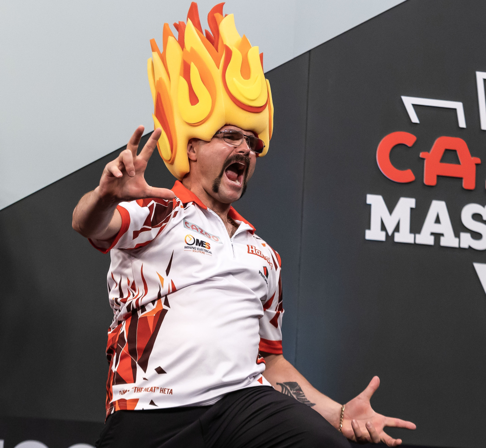

Damon Heta
Nickname
The Heat
Home Town
Perth, Western Australia
Walk-on song
Things Can Only Get Better - D:Ream
Darts Used
Harrows 21g
Rank
8
Televised titles
2
Non-Televised PDC titles
8
Televised Nine-Dart Finishes
1
Heta has enjoyed a meteoric rise since joining the professional circuit in 2020, establishing himself as Australia’s premier player.